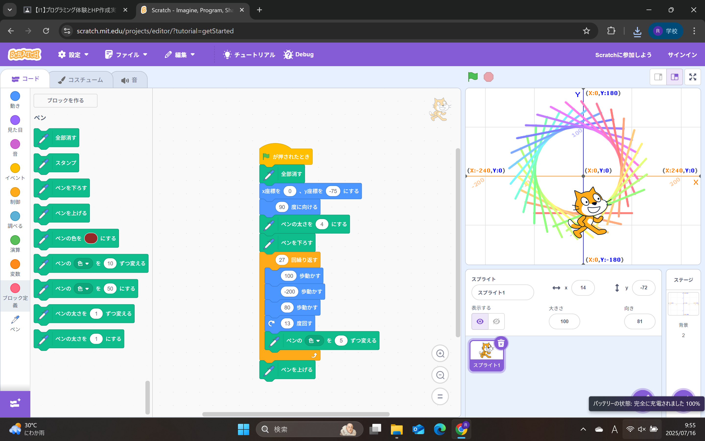
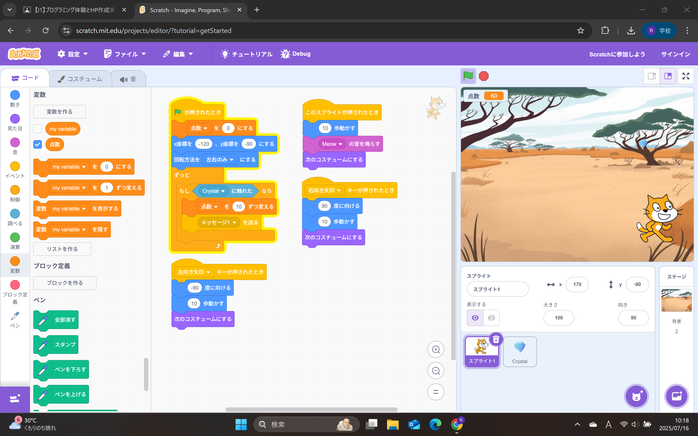

1週目のレポート ： 公大高専１年実習I-1
1a班8番 ティンカーベ
第1週目
1-1 サイエンスアート

1.内容
Scratchを使用した。拡張機能でペンを追加し、猫を動かして円のような図形を描いた。猫を動かす歩数や角度、ペンの色などを変えることで様々な円を描いた。
2.感想
歩数とか角度とかを考えないと猫があちこちに行ったり綺麗な円にならなかったりした。自分が思い描く円にするためにいろいろ調節して何回も試すことが楽しかったです。
1-2 ゲーム

1.内容
落ちてくるリンゴが猫にあたると消えてポイントが追加されるゲームを作った。このプログラムは猫とリンゴでスプライトを分けてプログラミングをした。背景にBGMを追加したりジャンプの機能を追加した。
2.感想
こんな短時間で簡単にゲームが作れることに驚きました。ブロックを組み合わせて作るから分かりやすいしプログラミングの難易度が下がったと思います。きっと小学生でも作れるし、プログラミングが苦手で今までプログラミングをあまりしたことがない私でも簡単と思えたのでとても楽しかったです。
1-3 ホームページ作成
私のホームページ
1.内容
URLを作成してホームページを作った。ホームページの内容を自分の情報に書き換えて自分のホームページを作成した。
2.感想
URLとかこんな感じで作成するんだと思いました。初めてホームページを作ったし、テンプレート的なものがあればこんなに簡単に作ることができるんだなと思いました。
各ページへのリンク
1週目のレポート
2週目のレポート
3週目のレポート
私のホームページ